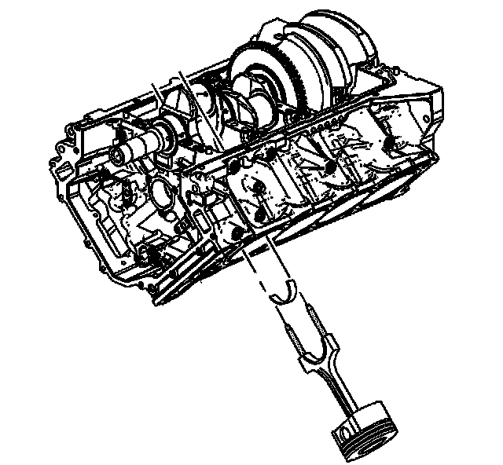
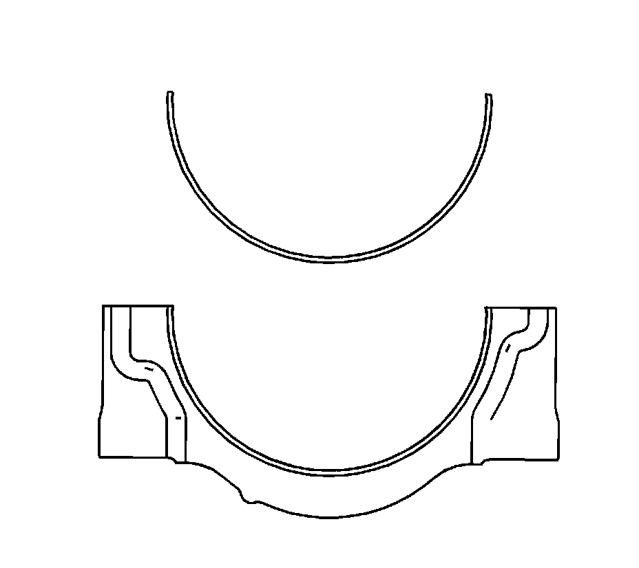

44. Piston, Connecting Rod, and Bearing Removal
Piston, Connecting Rod, and Bearing Removal
Tools Required
EN 46121 Connecting Rod Guide Pin Set

1. Note the orientation of paired connecting rods on each crankpin. The notches in the connecting rod cap must be facing each other.
2. Before removing the connecting rods, check the connecting rod end play using the following procedure:
1. Tap the connecting rod to one end of the crankshaft journal with a dead-blow or wooden hammer.
2. Using feeler gages, measure the clearance between the crankshaft counterweight and the connecting rod.
3. The connecting rod end play should not exceed 0.500 mm (0.020 in).
4. If the end play exceeds the specified limits, measure the width of the crankpin end of the connecting rod.
5. The width of the crankpin end of the connecting rod should be 21.745 - 21.805 mm (0.856 - 0.858 in).
6. If the connecting rod width is significantly smaller than specified and severe wear is present on the side of the connecting rod, replace the connecting rod.
7. If the connecting rod width is within specification and excessive scoring is present on the crankshaft journals, replace the crankshaft.
3. Using a paint stick or permanent marker, number each piston face. Draw an arrow along the centerline of the piston pointing toward the front of the engine.
Notice: Do not use a stamp, punch or any other method that may distort or stress the connecting rod or connecting rod cap. Extensive engine damage may result from a connecting rod that is distorted or stressed.
Important: Do NOT stamp or use a punch to mark a powdered metal connecting rod for identification.
4. Mark the cylinder number on the connecting rod and the connecting rod cap with paint stick, scribe or permanent marker. The connecting rod caps must remain with the original connecting rod.

Notice: Powdered metal connecting rods have rod bolts which yield when torqued. If the rod bolts are loosened or removed the rod bolts must be replaced. Rod bolts that are not replaced will not torque to the correct clamp load and can lead to serious engine damage.
5. Remove the connecting rod bolts.
6. Remove the connecting rod cap.

7. Install the EN 46121 into the connecting rod bolt holes.

8. Using the EN 46121 push the connecting rod and piston assembly down through the top of the cylinder. Do not scratch the crankshaft journal or the cylinder wall when removing the connecting rod and piston assembly.

9. Remove the EN 46121 from the connecting rod bolt holes.

10. Remove the connecting rod bearings. NEVER re-use the connecting rod bearings. Refer to Crankshaft and Bearing Cleaning and Inspection.
11. Reattach the connecting rod cap to the connecting to prevent damage to their mating surfaces. The cap and rod are a matched set and must be kept together.